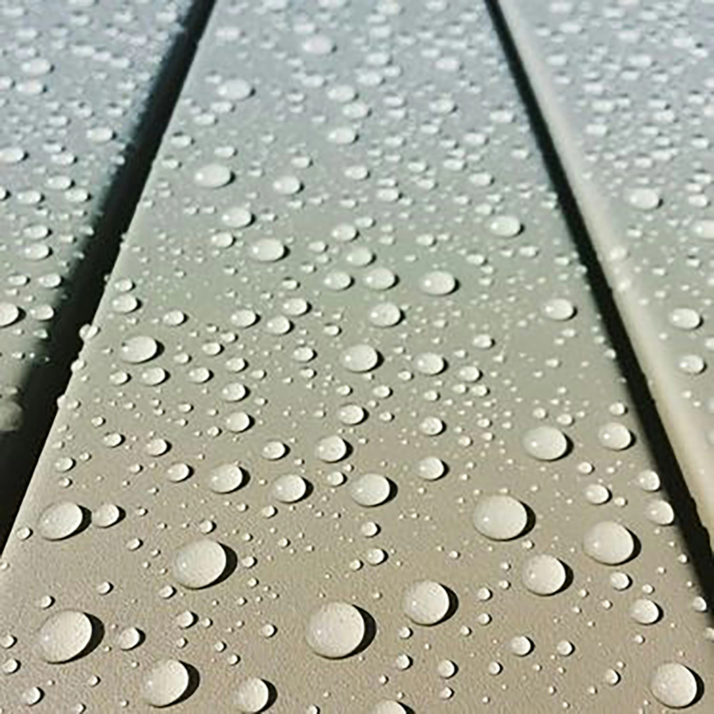
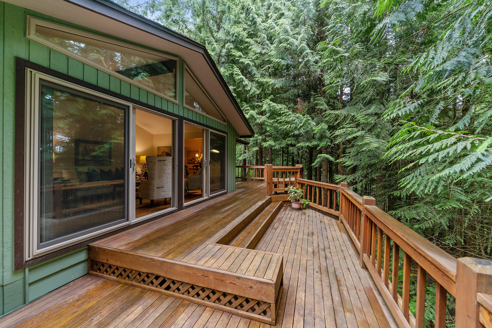
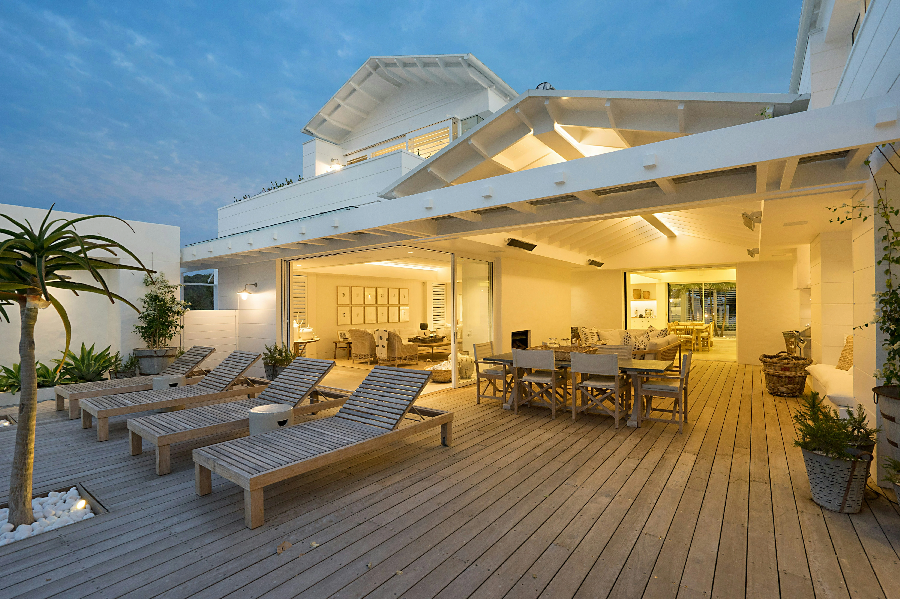

Metro Atlanta deck waterproofing
Protect your deck.
Protect what’s below.
A deck should be a place to relax—not a recurring source of leaks and water damage.
Structures Inc. provides deck waterproofing in Metro Atlanta. We evaluate existing surface conditions and vulnerable areas to help you plan protection suited to your outdoor space.

Understand the protection
What is deck waterproofing?
Deck waterproofing uses a water-control system to limit water passing through an outdoor deck assembly. Depending on the project, that system may involve membranes or coatings, connection details, and a planned route for drainage.
Structures Inc. evaluates the existing surface, identifies vulnerable areas, and discusses waterproofing options appropriate for the deck’s condition and use.
For decks over living space, garages, or entry areas, the space below is part of the conversation from the start.

Know when to ask
Small signs can point to a bigger water problem.
Changes on the deck—or in the area beneath it—can help guide an assessment. Share what you see and when it happens.
Leaks or staining below
Drips, ceiling stains, or damp areas after rain deserve investigation. The entry point may be somewhere other than directly above the visible damage.
Worn or separating surfaces
Peeling, blistering, open seams, or lifting edges may indicate a finish or waterproofing system that needs attention.
Water that lingers
Recurring standing water or persistently damp areas are worth discussing alongside drainage, surface condition, and existing details.
These observations do not establish the cause of a leak. Waterproofing also does not restore deteriorated framing; necessary repairs need to be addressed in the project scope.
Follow the water
Protection depends on how the details connect.
A waterproofing plan needs to consider the whole deck assembly. These are key areas to discuss when reviewing the proposed work.
- The existing surface Confirm the substrate, existing coatings, visible damage, and preparation needed for the selected system.
- Walls and door thresholds Review how deck waterproofing meets the building, including transitions and flashing details.
- Edges and penetrations Discuss perimeter edges, posts, drains, and other interruptions in the waterproofing layer.
- Drainage and discharge Establish where water will travel and how it will leave the deck without creating another problem.
Choose the right scope
A fresh finish and a waterproof deck are different goals.
Start by identifying what you need the work to accomplish. Appearance, water control, and structural condition each deserve a clear place in the proposal.
| Project goal | What to discuss | What to confirm |
|---|---|---|
| Limit water intrusion | A waterproofing assembly appropriate for the substrate, exposure, and use. | Surface preparation, transitions, drainage, and the complete system included. |
| Refresh the appearance | A finish selected for the desired look, texture, and intended traffic. | Whether the proposed finish provides waterproofing or needs a separate assembly. |
| Address deterioration | Repairs to affected substrate, framing, or supports where required. | What needs repair before waterproofing can proceed. |
Do not assume that paint, stain, tile, rubber surfacing, or a decorative stone finish makes a deck assembly waterproof. Confirm the function of the complete proposed system.
What to expect
A clear path from concern to protection.
-
Assess the deck
Review the existing surface, visible damage, reported leaks, and accessible connections. Identify conditions that need further investigation.
-
Define the system and scope
Discuss preparation, necessary repairs, waterproofing details, drainage, and finish requirements. Confirm what the proposal includes.
-
Complete the work and care plan
Follow the selected system’s installation and curing requirements. Confirm return-to-use timing and maintenance instructions.
Weather, substrate condition, repairs, and product requirements affect scheduling. Application completion and readiness for foot traffic or furniture may be separate milestones.

Match the space
What’s underneath changes the conversation.
Decks over enclosed spaces
When a deck sits above a room or garage, discuss the complete water-control assembly and the consequences of leakage below.
Elevated outdoor areas
Review how the deck meets the building, where water exits, and the condition of accessible surfaces and supports.
Existing decks needing renewal
Establish whether the existing materials can remain, what needs removal or repair, and how the proposed system will connect to surrounding details.
Plan your project
What does deck waterproofing cost?
A useful estimate starts with your deck’s condition and the protection it needs. Area is one factor; preparation and connection details also shape the scope.
- Size and layout: Deck area, access, perimeter edges, and interruptions in the surface.
- Existing condition: Coating removal, substrate repairs, and deterioration uncovered during preparation.
- Water-control details: Wall transitions, thresholds, penetrations, and drainage requirements.
- Selected system: Materials, finish, installation requirements, and intended use.
Compare complete scopes. Ask what is included, what remains uncertain, and how additional repairs would be handled if hidden damage is found.
Keep protection working
Care for the complete system.
Keep water moving
Keep accessible drainage paths clear of leaves and debris. Follow the maintenance instructions for the installed system.
Notice changes early
Report new leaks, lifting edges, damaged areas, or recurring standing water before making unplanned surface repairs.
Use compatible products
Confirm approved cleaners and any future recoating requirements. Ask before adding sealers, fasteners, or finishes.
Clear answers
Deck waterproofing FAQs
Understand the system, the preparation, and what your proposal covers before work begins.
Can an existing deck be waterproofed?
It may be possible, depending on the substrate, condition, layout, and selected system. Existing finishes or damaged materials may need removal or repair first.
Is deck waterproofing the same as staining or sealing?
No. Stains and sealers can serve surface-protection or appearance goals, but they should not be assumed to create a waterproof deck assembly. Confirm the function and limitations of the proposed system.
Will waterproofing fix a leaking deck?
The appropriate repair depends on where water enters and how it travels. The source may involve the deck surface, wall connections, thresholds, or other details. Assessment should come before choosing the repair.
What if my deck is above a room or garage?
Tell Structures Inc. what is beneath the deck when requesting a consultation. The waterproofing plan needs to consider the complete assembly, its connections, and drainage.
Does waterproofing repair rotten wood or weak framing?
No. Waterproofing does not restore damaged structural components. Necessary substrate or structural repairs need to be identified and addressed as part of the project.
Does a decorative deck finish provide waterproofing?
Not necessarily. A decorative finish may be separate from the waterproofing layer. Ask whether the complete proposed assembly is intended to provide water protection for your particular deck.
How long does deck waterproofing last?
Service life varies with the installed system, preparation, exposure, use, and maintenance. Request product-specific care information and the written terms of any applicable warranty.
When can I walk on the deck again?
Follow the selected system’s curing requirements. Weather can affect timing, and foot traffic, furniture placement, and full use may have different return-to-use requirements.
Where does Structures Inc. provide deck waterproofing?
Structures Inc. serves Metro Atlanta from Alpharetta, Georgia. Share your property location and project details to discuss service availability.
What should I send when requesting a consultation?
Send your property location, approximate deck size, existing surface material if known, what is beneath the deck, and a description of any leaks. Existing photos and repair history can also help explain the concern.
Structures Inc. · Metro Atlanta
Make a plan for the next rainy day.
Whether you are dealing with a leak or planning protection for an existing deck, start with a conversation about the surface, the details, and the space below.